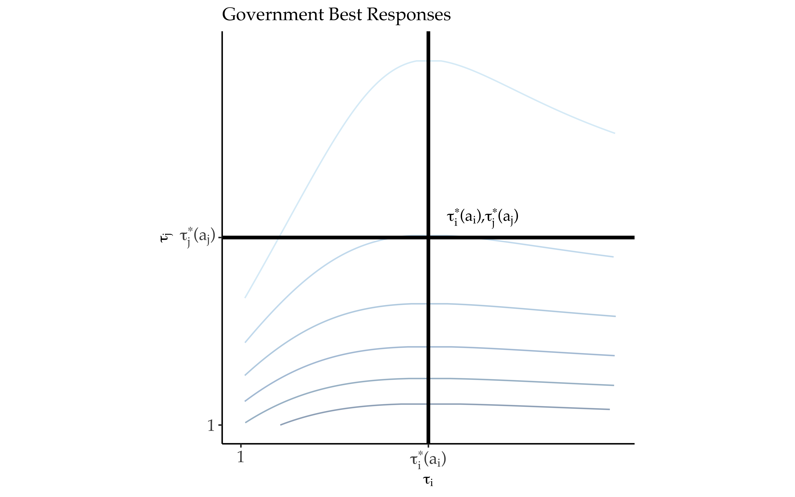

Gunboat Diplomacy
Political Bias, Trade Policy, and War
Brendan Cooley
19 January 2019
The Modern Economic Peace, 1870-2014

Why?
Dominant Paradigm: Trade mediates preexisting conflicts of interest
- Governments value trade, conflict disrupts trade
- \(\implies\) Commercial peace hypothesis: economic integration reduces war
- Conflicts of interest: territorial, ideological, etc
Commercial Policy Objectives
- Governments weakly mercantilistic, desiring
- Some degree of trade protection at home
- Trade liberalization or market access abroad
Market Access Externalities
- Protectionist barriers shift profits from foreign to home firms
- Thus, trade policy itself generates conflicts of interest between mercantilist governments
Political Bias
Local definition: Degree to which government internalizes narrow (protectionist) interests of firms at the expense of broad (liberal) interests of consumers
- Grossman and Helpman (1994), Bueno de Mesquita et al (2004)
Regimes and Political Bias
- Democracies afford consumers access to policymaking process, more liberal trade policy preferences than autocracies (Milner and Kubota 2005)
Argument in Brief: For democracies, liberal preferences \(\implies\) smaller conflicts of interest \(\implies\) fewer wars
- Additionally, liberal preferences \(\implies\) more trade
- Spurious correlation between trade and peace
Model Structure
Bargaining Environment
- Two governments bargain over trade policies, \(\widetilde{\boldsymbol{\tau}} = \left\{ \tau_i, \tau_j \right\}\)
- “Home” gov \(i\) makes TIOLI offer to “foreign” gov \(j\)
- Information about \(j\)’s costs of war held privately
\[ \widetilde{\boldsymbol{\tau}}^\star(a_i) = \text{argmax } \widetilde{G}_i \left( \widetilde{\boldsymbol{\tau}}(a_i), \omega^\star(\widetilde{\boldsymbol{\tau}}(a_i) | a_j) | a_i \right) \]
- Foreign can accept or declare war
\[ \omega^\star(\widetilde{\boldsymbol{\tau}} | a_j) = \text{argmax } \widetilde{G}_j \left( \widetilde{\boldsymbol{\tau}}, \omega(\widetilde{\boldsymbol{\tau}} | a_j ) \right) \]
International Economy
Representative consumer and \(n\) firms in each economy, monopolistic competition
- Krugman 1980, Venables 1987, Ossa 2012
Government Preferences I
\[\begin{equation} \label{eq:G} G_i(\tau_i, \tau_j | a_i) = a_i V_i^x(\tau_i) + \Pi_i(\tau_i, \tau_j) + r_i(\tau_i) \end{equation}\]
- \(V_i^x(\tau_i)\) - consumer welfare
- \(\Pi_i(\tau_i, \tau_j)\) - firm profits
- \(r_i(\tau_i)\) - tariff revenue
\(a_i\) is measure of sensitivity to interests of consumers
Government Preferences II

Non-cooperative Equilibrium

Non-cooperative Equilibrium

Regime Change and Conflicts of Interest
Optimal Puppet Regimes
- When a government wins a war, it earns the right to replace the vanquished government with a “puppet” that prefers lower barriers to trade
\[ \max_{a \in (0, \bar{a}]} G_i( \tau_i^\star(a_i), \tau_j^\star(a) | a_i ) \]
- Losing governments have puppet’s policies imposed on them
Conflicts of Interest
- Utility difference between (costlessly) winning a war for regime change and being replaced by a puppet
\[\begin{equation} \label{eq:Gamma} \Gamma_i(a_i, a_j) = \overline{G}_i(a_i) - \underline{G}_i(a_i, a_j) \end{equation}\]
Bargaining Environment
Results
Proposition 3: Conflicts of interest smaller for low bias (democratic) governments.
Proposition 4: The probability of war is lower for low bias (democratic) governments.
Proposition 5: Equilibrium trade flows are higher for low bias (democratic) governments.
Conclusion
- Equilibrium trade policies balance
- Domestic political interests
- Foreign military constraints
- Threat of regime change sufficient to produce changes in policies
- Shadow of military power in international political economy
Thank You
Title Slide Image Credit: Charles Severin (American lithographer, born between 1808-1820; died ca. 1860). 1853 (creation). The American Expedition, The American Expedition, Under Commodore Perry, Landing in Japan, July 14, 1853, Overall view. visual works; prints (visual works); planographic prints; lithographs. https://library.artstor.org/asset/SS35100_35100_35234600